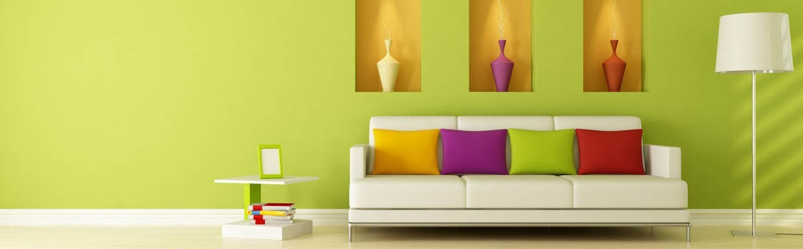
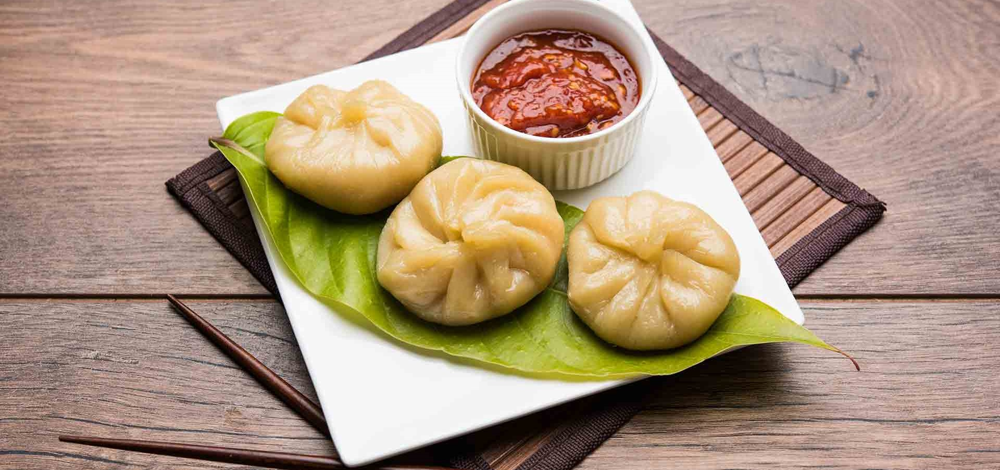
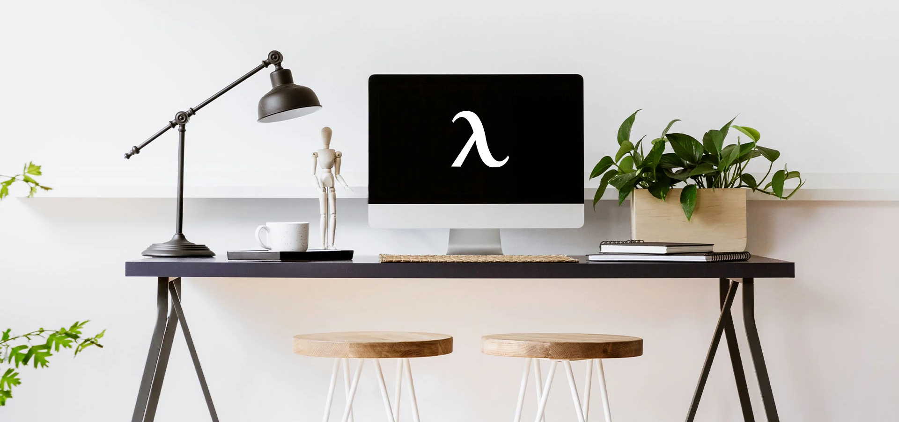

Finding the simplicity in life

August 30,2022 ! 3 comments
Life can get complicated really quickly , but it does not have
to be!
There are many ways to simplify your life, a few of which we have
explored in the past.This week we are taking a bit of approach though, in how
you can find simplicity in the life you already living.
CONTINUER READING
Keeping cooking simple
Food is a very important part of everyone's life. If you want to ve healthy,
you have ot eat healthy. One of the easiest ways to do that is to keep your cooking nice and
simple.
CONTINUER READING

August 30,2022 | 3 comments
Simplicity and work
Work is often a major source of stree .People get frustrated. it ruins their
relationship withothers and it leads to burnout. Bu keeping your work life as ismple as
possible, it will help balance everything out.
CONTINUER READING

August 30,2022 | 3 comments
Simple decorations
A home isn't a home untill you;ve decorated a little. People either don't
decorate, or they fo overboard and it doesn't have the impact they were hoping for. Staying
simple will help draw the eye where you want it to and make things pop like never before.
CONTINUER READING
August 30,2022 | 3 comments